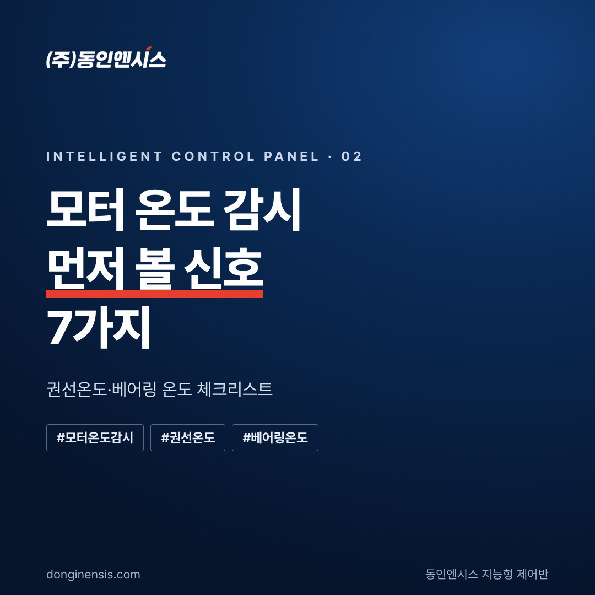
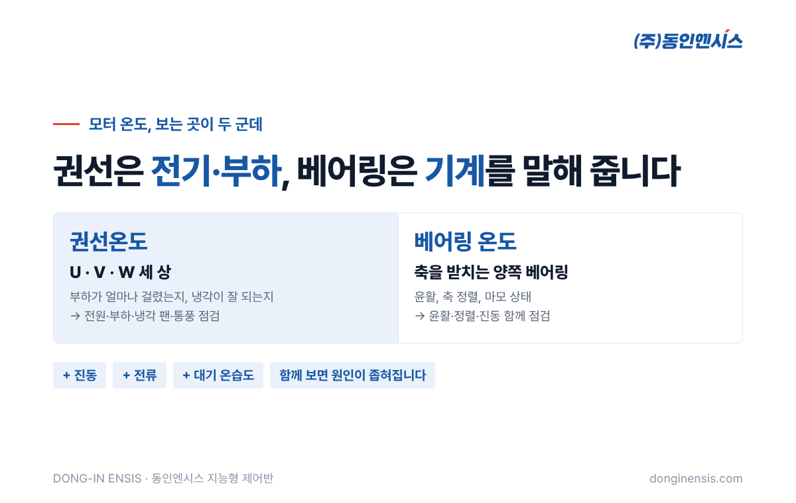
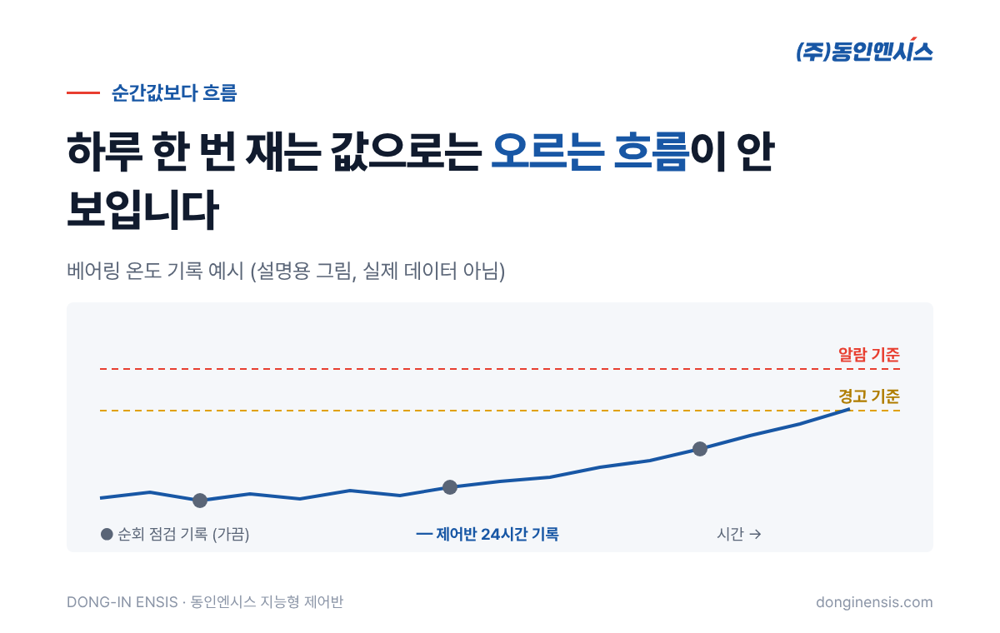
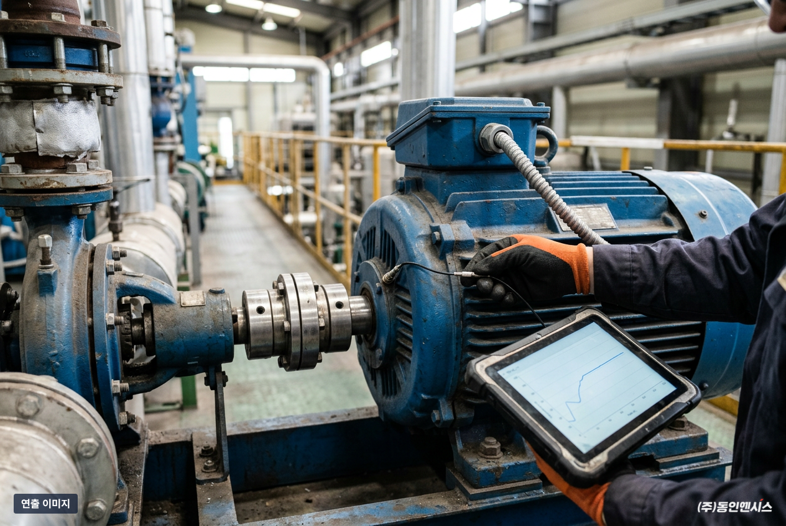
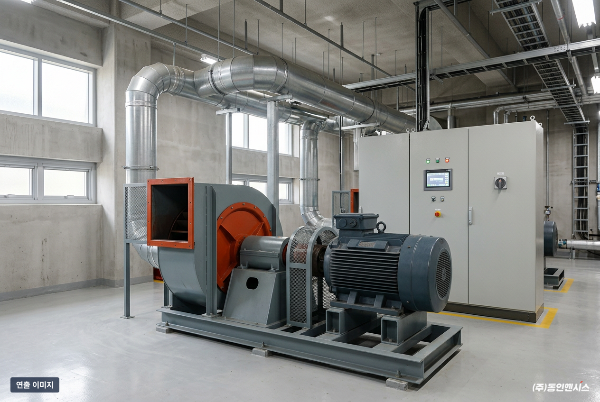

모터가 갑자기 멈췄을 때 뜯어 보면, 대부분 그 전에 온도가 먼저 말을 걸고 있었습니다. 다만 아무도 그 신호를 기록하지 않았을 뿐입니다. 이 글에서는 양산·기장 공장에서 제어반을 직접 설계·제작하는 동인엔시스가 현장에서 모터 온도 감시를 할 때 먼저 확인하는 신호 7가지를 체크리스트로 정리했습니다. 우리 공장 모터에 해당하는 항목이 있는지 하나씩 짚어 보세요.
모터 온도라고 해도 보는 곳이 두 군데입니다.
둘은 원인이 다릅니다. 권선온도가 오르면 전기·부하·냉각 쪽을, 베어링 온도가 오르면 기계 쪽을 먼저 의심하게 됩니다. 한쪽만 보면 원인을 엉뚱한 곳에서 찾기 쉽습니다.

아래 항목은 현장에서 흔히 쓰는 점검 기준입니다. 정확한 판단은 모터 사양과 설비 조건을 함께 봐야 하지만, 하나라도 해당하면 점검 일정을 앞당기는 것이 좋습니다.
□ 1. 세 상 중 한 상의 권선온도만 유독 높다 세 상은 보통 비슷하게 움직입니다. 한 상만 높다면 전원 쪽 불평형이나 접속 상태를 확인해 볼 신호입니다.
□ 2. 부하는 비슷한데 권선온도가 예전보다 높다 같은 일을 하는데 더 뜨거워졌다면 냉각 팬이나 통풍구가 막혔는지, 주변 온도가 올랐는지부터 봅니다.
□ 3. 베어링 온도가 며칠, 몇 주에 걸쳐 조금씩 계속 오른다 하루 이틀로는 눈에 띄지 않는 변화입니다. 윤활 상태나 베어링 마모를 의심해 볼 수 있습니다.
□ 4. 양쪽 베어링 중 한쪽만 온도가 높다 부하가 한쪽으로 쏠렸거나 축 정렬이 틀어졌을 가능성이 있습니다.
□ 5. 기동 후 온도가 오르는 속도가 전보다 빨라졌다 평소와 같은 시간에 더 높은 온도에 닿는다면, 설비 어딘가에 저항이 커졌다는 뜻일 수 있습니다.
□ 6. 베어링 온도와 진동이 함께 오른다 두 값이 같이 움직이면 기계적인 문제일 가능성이 커집니다. 온도만 볼 때보다 판단이 훨씬 분명해집니다.
□ 7. 전류는 그대로인데 베어링 온도만 오른다 부하가 늘어서가 아니라 베어링 자체의 문제일 수 있다는 신호입니다.
체크리스트를 다시 보면 대부분 "예전보다", "계속", "함께"라는 말이 들어 있습니다. 결국 한 번 재 본 온도보다, 시간에 따라 어떻게 변했는지가 더 많은 것을 알려 준다는 뜻입니다.
순회 점검으로 하루 한두 번 온도를 적는 방식으로는 이 흐름을 잡기 어렵습니다. 야간과 주말이 비고, 사람마다 재는 위치와 시간도 조금씩 다르기 때문입니다. 제어반이 같은 위치의 센서 값을 24시간 같은 간격으로 남겨야 비로소 "지난달보다 올랐다"는 비교가 가능해집니다.


모터 온도는 모터 혼자 정하지 않습니다. 같은 부하로 돌아도 한여름 기계실과 한겨울 기계실의 모터 온도는 다릅니다. 주변 온도를 모르면 "온도가 올랐다"는 사실만 보이고, 그것이 계절 탓인지 설비 탓인지 구분하기 어렵습니다.
그래서 동인엔시스 지능형 제어반은 모터 온도와 함께 대기 온습도도 기록합니다. 주변 온도는 비슷한데 모터 온도만 올랐다면 설비 쪽 원인을, 주변 온도와 함께 올랐다면 환기나 냉각 환경을 먼저 보는 식으로 점검 순서를 정할 수 있습니다. 여름이 오기 전에 통풍구와 냉각 팬을 미리 손보는 계획을 세우는 데도 이 기록이 쓰입니다.
같은 설비가 여러 대라면 비교도 쉬워집니다. 같은 실내, 같은 부하에서 유독 한 대만 온도가 높다면 그 설비가 점검 1순위입니다. 사람이 기억으로 비교하던 일을 기록이 대신해 주는 셈입니다.
온도 기준을 하나만 두면, 너무 낮게 잡을 경우 쓸데없는 알람이 쏟아지고 너무 높게 잡으면 늦게 알게 됩니다. 그래서 동인엔시스 지능형 제어반은 센서마다 기준값을 두고 상태를 정상·경고·알람 세 단계로 나눕니다. 센서 하나라도 경고에 들어가면 그 설비 전체가 경고로 표시돼, 어느 설비부터 봐야 하는지 바로 알 수 있습니다.
기준값은 모터 사양과 설비의 평소 운전 상태를 보고 시운전·안정화 단계에서 고객사 담당자와 함께 정합니다. 운영하면서 계절이나 공정 변화에 맞춰 조정할 수도 있습니다. 참고로 기준값을 넘을 때 알려 주는 알람은 설치 직후부터 쓸 수 있고, AI로 미세한 이상을 찾는 기능은 아직 고도화하는 단계입니다.
모터 온도 감시를 하려고 설비를 바꿀 필요는 없습니다. 모터와 펌프는 그대로 두고, 제어반을 교체하거나 새로 설치하면서 권선·베어링 온도 센서와 진동, 전류 값을 함께 모으는 방식입니다. 현장에는 제어반 한 면만 들어가고, 데이터를 모으는 장비를 따로 달지 않습니다.
Schneider Electric 공식 SI 파트너로서 PLC·인버터 프로그램과 시운전까지 직접 맡기 때문에, 제어와 온도 감시가 따로 놀지 않습니다.

Q. 모터에 온도 센서가 없으면 어떻게 하나요? 현장 분석에서 모터 상태와 설치 여건을 보고 센서 설치 방법을 함께 정합니다. 모터마다 조건이 달라 일괄적으로 말씀드리기는 어렵습니다.
Q. 몇 도를 넘으면 위험한가요? 모터 사양과 운전 조건에 따라 다릅니다. 그래서 숫자 하나로 정하지 않고, 사양과 평소 운전 데이터를 보고 경고·알람 기준을 따로 잡습니다.
Q. 온도만 보면 충분한가요? 온도는 가장 먼저 볼 신호지만, 진동과 전류를 함께 보면 원인을 훨씬 빨리 좁힐 수 있습니다. 위 체크리스트 6번과 7번이 그런 경우입니다.
Q. 알람은 어디로 오나요? 웹 대시보드에서 설비 상태와 알람을 확인할 수 있고, 구성은 현장 환경과 보안 정책에 맞춰 정합니다.
Q. 오래된 모터에도 적용할 수 있나요? 모터를 바꾸지 않고 제어반 쪽에서 감시를 붙이는 방식이라 오래된 설비에도 적용할 수 있는 경우가 많습니다. 다만 센서를 달 위치와 배선 경로는 현장마다 달라, 현장 분석에서 먼저 확인합니다. 오래된 설비일수록 기록을 남겨 두는 효과가 큽니다.
모터는 고장 나기 전에 온도로 먼저 신호를 보냅니다. 그 신호를 놓치지 않으려면 권선과 베어링 온도를 함께, 그리고 꾸준히 기록하는 것이 출발점입니다.
위 7가지 중 마음에 걸리는 항목이 있다면, 어떤 모터부터 감시하면 좋을지 엔지니어와 함께 살펴보세요. 홈페이지에서 적용 가능성 진단을 신청하시면 현장 조건에 맞는 방법을 안내해 드립니다.
전화 상담 051-862-3668 · 메일 dongin@donginmne.com
아래 질문 중 하나에 실제 경험으로 답해 본문 적당한 곳에 넣어 주세요. 사람이 직접 쓴 문장이 들어가면 네이버에서 저품질 위험이 줄고 노출에 도움이 됩니다.